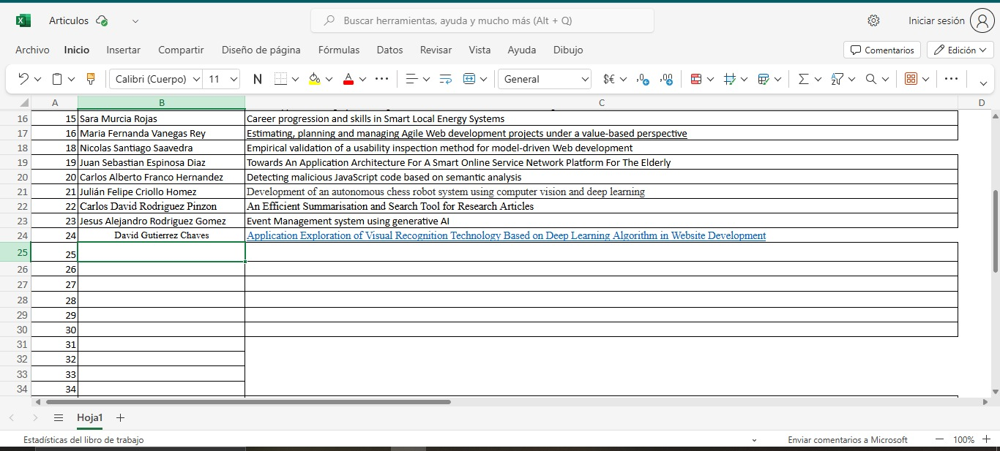
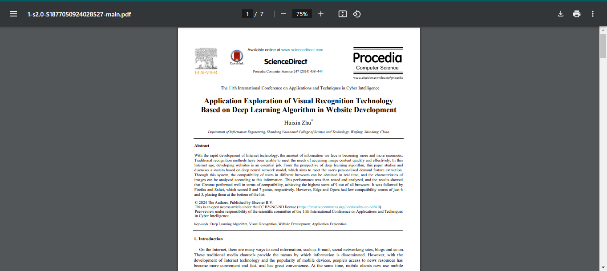
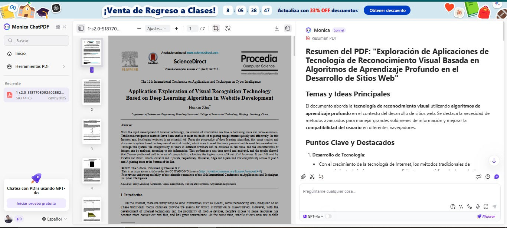
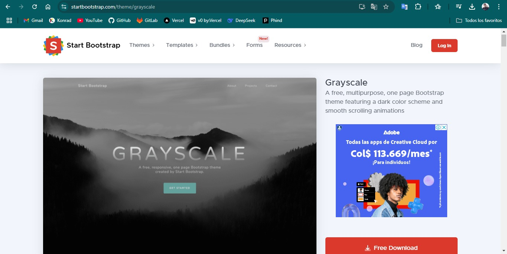

Screenshots
Capturas de pantalla donde se visualizan algunos resultados de la
búsqueda hecha en la base de datos Science Direct, donde se observa también el artículo
seleccionado.
Captura #1:
En la base de datos de Science Direc, buscar por los
términos "learning" AND "web development".
Captura #2:
Seleccionamos uno de los artículos de esa búsqueda de los
términos "learning" AND "web development, consignando la información en el Excel."
Captura #3:
En este caso seleccionamos el articulo "Application
Exploration of Visual Recognition Technology Based on Deep Learning Algorithm in
Website Development".

Captura #4:
Visualización del documento PDF descargado, este artículo
sera utiliazado en conjunto con Monica IA.

Captura #5:
Utilizamos la IA para hacer 5 preguntas sobre el artículo
con sus respectivas respuestas para ser usadas mas adelante.

Captura #6:
Plantilla utilizada previamente para la elaboración del
trabajo, por medio de la plataforma de StartBootstrap/templates.
Technical Data Sheet of the Article
Ficha Técnica del Artículo
Link
Articulo
Title - Título:
Application Exploration of Visual Recognition Technology Based on Deep Learning Algorithm in Website
Development
Authors - Autores:
Huixin Zhu
Summary - Resumen:
El artículo aborda el desarrollo de una tecnología de reconocimiento visual basada en algoritmos de
aprendizaje profundo,
enfocándose en la mejora de la compatibilidad del usuario en diferentes navegadores web. Se presenta un
sistema que utiliza
redes neuronales profundas para la extracción de características personalizadas y se analizan los resultados
de compatibilidad
entre varios navegadores. Además, se discuten los desafíos actuales en el reconocimiento visual y se
proponen mejoras para el
futuro en términos de precisión y velocidad.
Key Words - Palabras clave:
Deep Learning Algorithm, Visual Recognition, Website Development, Application Exploration
Number of references - Cantidad de referencias:
El documento consta de 20 referencias.
PDF Summary: "Exploring Applications of Visual Recognition Technology Based
on Deep Learning Algorithms in Website Development"
Resumen del PDF: "Exploración de Aplicaciones de Tecnología de
Reconocimiento Visual Basada en Algoritmos de
Aprendizaje Profundo en el Desarrollo de Sitios Web
Link
Articulo
Temas y Ideas Principales
El documento aborda la tecnología de reconocimiento visual utilizando algoritmos de
aprendizaje profundo en el contexto del desarrollo de sitios web. Se destaca la necesidad de
métodos avanzados para manejar grandes volúmenes de información y mejorar la compatibilidad del
usuario en diferentes navegadores.
Puntos Clave y Destacados
1. Desarrollo de Tecnología:
- Con el crecimiento de la tecnología de Internet, los métodos tradicionales de reconocimiento de imágenes
ya no son suficientes para satisfacer la demanda de procesamiento rápido y efectivo de contenido visual.
- Se propone un sistema basado en un modelo de red neuronal profunda para la extracción de características
personalizadas del usuario y análisis de compatibilidad en tiempo real.
2. Resultados de Compatibilidad:
- Los resultados de las pruebas mostraron que Chrome obtuvo la mejor
puntuación de compatibilidad (9), seguido de Firefox (8) y Safari (7). Edge y Opera tuvieron puntuaciones más bajas (6 y 5, respectivamente).
3. Metodología de Aprendizaje Profundo:
- Se introducen conceptos de algoritmos de aprendizaje profundo y su aplicación en el
reconocimiento visual, incluyendo la segmentación de imágenes y la estimación de errores en modelos de
clasificación.
- Se presentan pasos concretos para el diseño e implementación de un sistema de clasificación visual,
validando su efectividad mediante experimentos utilizando software como MATLAB.
4. Resultados y Discusión:
- Se realizaron experimentos sobre la identificación visual en el desarrollo de sitios web, enfatizando la
importancia de la extracción de características y el reconocimiento de patrones.
- Se analizó el tráfico del sitio web, evidenciando que la actividad del usuario es más intensa durante
ciertas horas del día, lo que afecta la capacidad del sitio para manejar solicitudes.
5. Conclusiones y Futuras Mejoras:
- Se concluye que, a pesar de los logros en el reconocimiento visual, existen desafíos relacionados con el
procesamiento de imágenes y la precisión de los modelos.
- Se sugieren mejoras en la precisión y velocidad del reconocimiento visual, así como el uso de
tecnologías avanzadas para garantizar la seguridad de los sistemas web.
Este resumen encapsula los temas centrales y hallazgos del artículo, destacando la relevancia de los
algoritmos de aprendizaje profundo en el desarrollo web contemporáneo y sus implicaciones para la
compatibilidad y experiencia del usuario.
Questions asked using the Monica AI tool and their respective
answers
Preguntas realizadas usando la herramienta Monica IA y sus respectivas
respuestas
Multiple-Choice Questions
Here are some multiple-choice questions based on the themes discussed in the reading:
-
What is the primary focus of the paper?
- A) The history of web development
- B) Visual recognition technology based on deep learning algorithms
- C) Traditional methods of image recognition
- D) The evolution of Internet technology
-
Which browser achieved the highest compatibility score in the study?
- A) Firefox
- B) Chrome
- C) Safari
- D) Edge
-
What technology is primarily used for feature extraction in the proposed system?
- A) Traditional image processing techniques
- B) Deep learning algorithms
- C) Manual classification methods
- D) Simple heuristic algorithms
-
According to the paper, what is a significant challenge in visual recognition
technology?
- A) The availability of data
- B) The complexity of web design
- C) The accuracy of image processing and segmentation
- D) User interface design
-
What software was used for experiments in the study?
- A) Python
- B) R
- C) MATLAB
- D) Java
-
What factor affects the website's traffic according to the findings?
- A) The design of the website
- B) The time of day
- C) The number of images used
- D) The type of content displayed
-
What is one of the proposed improvements for future research?
- A) Reducing the number of images processed
- B) Enhancing the speed and accuracy of visual recognition
- C) Simplifying the user interface
- D) Using only traditional recognition methods
Correct Answers
Here are the answers to each of the questions shown above:
-
What is the primary focus of the paper?
- B) Visual recognition technology based on deep learning algorithms
-
Which browser achieved the highest compatibility score in the study?
-
What technology is primarily used for feature extraction in the proposed system?
- B) Deep learning algorithms
-
According to the paper, what is a significant challenge in visual recognition
technology?
- C) The accuracy of image processing and segmentation
-
What software was used for experiments in the study?
-
What factor affects the website's traffic according to the findings?
-
What is one of the proposed improvements for future research?
- B) Enhancing the speed and accuracy of visual recognition
Personal Opinion of the Article
Opinión Personal Del Articulo
Dentro del articulo en una época en la que el volumen de la información en internet no deja de
incrementar, se va haciendo inevitable el hecho de que no hay nada más lejos que dejar que el reconocimiento
de imágenes por medio de los métodos tradicionales logre satisfacer la exigencia que manifiestan los
usuarios. Y es que efectivamente nos encontramos actualmente en un momento en el cual ir rápido y ser muy
eficaces en la obtención del contenido visual requerido constituyen cuestiones absolutamente imprescindibles
e irrenunciables para la experiencia del usuario.
Se presenta la propuesta del autor Huixin Zhu la del sistema creado por el uso de los algoritmos de
aprendizaje profundo mediante redes neuronales profundas que van a mejorar la forma en la que el contenido
visual tratado en los sitios web. El artículo destaca la importancia de gestionar la compatibilidad
entre navegadores, los resultados de las pruebas muestran que Chrome otorga mayor puntuación en el ranking,
seguido de Firefox y Safari, mientras que Edge y Opera logran puntuaciones más bajas.
Esta información es esencial en un contexto de desarrollo en el que se desea optimizar la experiencia de los
usuarios, ya que la misma experiencia de los usuarios se puede perfeccionar y al mismo tiempo facilitar
el acceso de los usuarios con el empleo de los navegadores correspondientes, además de que ellos son los que
al lanzar un proyecto o producto final, hacen que este salga a flote o hundirse por diversas razones en el
proceso, ya que no es de agrado para los ususarios o no es algo relevante para la audiencia que fue diseñado
el sistema o software.
El uso de herramientas como MATLAB utilizada para realizar experimentos y verificar
resultados, además de la importancia de la investigación práctica para la aplicación de teorías y modelos
del mundo real, como la capacidad para emplear un software avanzado para realizar esta clase de
procesamiento de imágenes y entrenar modelos de reconocimiento a estos problemas constituye una competencia
en el desarrollo web, tambien de la IA en aplicación y desarrollo de la misma.
Utilizar estos sistemas puede ayudar a incrementar no solo la eficiencia, sino que también se
convierte en un punto de partida para el desarrollo de la personalización y de la interacción de los
usuarios en la investigación y aplicacion de dichos softwares o sitemas que ayuden dar solución a estos
problemas. Siempre se resalta la importancia de continuar la investigación y el desarrollo de
tecnologías no sólo eficaces, sino también seguras, en un mundo en el que la privacidad y la seguridad de
los datos personales se constituyen como una inquietud, resulta fundamental para los desarrolladores
proporcionar soluciones que protejan al usuario y sus datos.
Por todo lo anteriormente mencionado, la contribución del artículo de Huixin Zhu resulta muy relevante en el
desarrollo web y a la forma de resolver cuestiones del reconocimiento visual, siendo asi una interesante
manera de plantearnos cómo puede la tecnología ayudarnos a mejorar nuestras interacciones en el mundo
virtual y/o tecnologico, la importancia de la compatibilidad entre navegadores, la exactitud en el
reconocimiento de imágenes y la privacidad de los datos personales. Conforme va avanzando el desarrollo
digital cada vez más es fundamental seguir investigando y perfeccionando la tecnología para procesos más
efectivos inclusive como la imersión total.
Declaration of Use of Artificial Intelligence for Academic Writing at Konrad
Lorenz University Foundation
Declaración De Uso De Inteligencia Artificial Para La Escritura Académica En
La Fundación Universitaria Konrad Lorenz
Link Declaración De Uso De Inteligencia Artificial Para La Escritura Académica En La Fundación
Universitaria Konrad Lorenz:
Declaración
Uso IA

Declaración de uso de inteligencia artificial para la escritura académica en la Fundación
Universitaria Konrad Lorenz
La Fundación Universitaria Konrad Lorenz comprometida con la excelencia académica, la integridad y el respeto
por los derechos de propiedad intelectual e industrial, reconoce el avance y la integración de las
tecnologías
de Inteligencia Artificial (IA) en los procesos educativos y de investigación. Esta declaración establece
pautas
para regular el uso de IA en la escritura académica, buscando asegurar su articulación con los valores y los
lineamientos institucionales.
1. Principios Generales:
- Compromiso Ético: El uso de IA para la escritura académica debe adherirse a principios
éticos, que
promuevan la honestidad, la transparencia y la responsabilidad en todas las actividades académicas.
- Transparencia y Declaración de Uso: Los estudiantes, docentes y trabajadores deben
declarar explícitamente el uso
de herramientas de IA en trabajos académicos, material de apoyo o audiovisual; especificando el alcance,
límites
éticos, legales y su contribución al desarrollo del contenido creado.
- Integridad Académica: El uso de IA debe complementar, y no reemplazar el pensamiento
crítico y la creatividad
humana, por lo que el autor debe garantizar el grado de originalidad y autoría del contenido.
2. Directrices para el Uso de IA:
- Autoría y Contribución: La autoría de cualquier contenido asistido por IA recae en
quienes han contribuido intelectualmente
al mismo. El uso de IA como herramienta de apoyo debe ser documentado y justificado; en ningún caso la
IA será reconocida como autor o
coautor de trabajos escritos.
- Respeto por la Propiedad Intelectual: El autor debe realizar la citación y
referenciación de la herramienta
de inteligencia artificial utilizada, siguiendo las pautas y estilos de citación requeridos en la
elaboración de trabajos académicos.
- Calidad y Rigor Académico: Los trabajos académicos o cualquier contenido asistido por
IA debe cumplir con los
mismos estándares de calidad y rigor al ser enviados en las diferentes instancias académicas.
- Confidencialidad: Se debe garantizar la confidencialidad de los datos, información
personal, institucional o de
entidades externas, por lo que se deberá revisar los términos y condiciones antes de usar las
herramientas de inteligencia artificial,
para determinar el nivel de confidencialidad de la información suministrada buscando garantizar la
privacidad y protección de los datos
utilizados para fines académicos.
3. Restricciones:
- Prohibición de Suplantación: Queda estrictamente prohibido el uso de IA para suplantar
la identidad académica o la
autoría intelectual por parte de estudiantes, docentes y trabajadores.
- Contenido e información: Queda restringido el uso de información de personas,
instituciones o investigaciones en
herramientas de inteligencia artificial libres o de suscripción.
- Restricción de uso en evaluaciones: No se permite el uso de IA evaluaciones, exámenes y
otras formas de valoración
académica, en cumplimiento de las normativas establecidas por la institución para garantizar una
evaluación justa y equitativa
4. Responsabilidades:
- Capacitación y Conocimiento: La Institución se compromete a proporcionar capacitación y
recursos para fomentar
el uso ético, responsable y efectivo de la IA.
- Vigilancia y Cumplimiento: Se establecerán mecanismos de vigilancia y seguimiento para
asegurar el cumplimiento
de esta declaración
- Revisión y Actualización: La Institución revisará y actualizará periódicamente el
contenido de esta declaración teniendo en cuenta los cambios o avances de las herramientas, para
la previsión de riesgos y el uso responsable de la IA.
Esta declaración refleja el compromiso de la Fundación Universitaria Konrad Lorenz con la innovación
responsable y la calidad académica, en concordancia con las disposiciones de los Reglamentos Académicos
de Pregrado y Posgrado, el Reglamento General de Propiedad Intelectual y las demás normativas externas.
La presente Declaración entrará en vigor inmediatamente y será revisada regularmente para mantenerse al día
con los avances tecnológicos y las nuevas aplicaciones de la IA en el ámbito académico
5. Propuesta de Declaración de Uso de Inteligencia Artificial en la Escritura Académica (Formato
electrónico):
- Nombre Completo: David Gutierrez Chaves.
- Calidad de Miembro de la Comunidad Universitaria: Estudiante.
- Programa: Ingeniería De Sistemas.
Declaración:Yo, David Gutierrez Chaves, como miembro de la comunidad
universitaria de la Fundación
Universitaria Konrad Lorenz en mi calidad de Estudiante reconozco la importancia y el
impacto de la inteligencia
artificial (IA) en el avance de la investigación y de la educación. Comprometido(a) con los valores de
integridad,
ética y transparencia que define nuestra Institución, por medio de la presente, declaro lo siguiente
respecto al uso
de IA en mi actividad académica, generación de contenido:
Compromiso con la Ética:Me comprometo a utilizar las herramientas de IA de manera ética y
responsable, asegurando
que su empleo en la escritura académica se alinee con los principios de integridad académica y respeto por
la propiedad intelectual
e industrial.
Uso Transparente de la IA: Declaró de manera transparente y explícita, el uso de cualquier
tecnología de IA en mis
trabajos académicos, especificando el alcance de su aplicación y diferenciando claramente entre el contenido
generado por IA y el
originado por mi aporte intelectual humano.
Restricciones de Uso: Reconozco que la IA es una herramienta de asistencia y no un sustituto
de la creatividad,
análisis crítico y juicio intelectual humano. Por tanto, no utilizaré la IA para generar contenido original
que debe ser producto
de la reflexión y el razonamiento académico humano, incluyendo, pero no limitándose a, la generación de
hipótesis, análisis de datos,
conclusiones, recomendaciones o creación de contenido original significativo.
Restricciones de Uso: Reconozco que la IA es una herramienta de asistencia y no un sustituto
de la creatividad,
análisis crítico y juicio intelectual humano. Por tanto, no utilizaré la IA para generar contenido original
que debe ser producto
de la reflexión y el razonamiento académico humano, incluyendo, pero no limitándose a, la
Revisión y Responsabilidad: Asumo la responsabilidad de revisar y supervisar todo contenido
asistido por IA para
asegurar su precisión, relevancia y alineación con los estándares éticos y académicos. Con la entrega de la
actividad académica a
la Fundación Universitaria Konrad Lorenz asumiré la responsabilidad final del contenido, garantizando su
integridad y conformidad
con los lineamientos académicos y éticos establecidos.
Formación Continua: Me comprometo a mantenerme informado(a) y actualizado(a) sobre las
mejores prácticas y los
desarrollos éticos en el uso de la IA en la academia, participando en iniciativas de formación y
capacitación proporcionadas por
la Institución o por entidades reconocidas en el campo.
Observaciones: En este trabajo no fue muy necesario el uso de las diversas IA, ya que se
tomó una plantilla preestablecida
y solo se modificó el código HTML, el estilo CSS y agregando nuevas carpetas dentro de assets del proyecto
para darle solución a los diferentes
requerimientos establecidos en el documento teórico del trabajo de base de datos corte-I.
Detalles del Uso de IA:
| Usos |
Nombre de la herramienta IA utilizada |
| Consulta de información |
Monica IA - DeepSeek |
| Producción de texto |
Monica IA |
| Análisis de documentos |
Monica IA |
| Análisis de datos |
|
| Generación de ideas |
|
| Redacción, ortografía y gramática |
|
| Creación de guiones o diálogos |
|
| Generación de imágenes o ilustraciones |
|
| Creación de gráficos |
|
| Diseño de conceptos visuales |
|
| Transcripción de audio a texto |
|
| Traducción de audio |
|
| Mejora de calidad de audio |
|
| Análisis de estructuras proteicas |
|
| Predicción de estructuras moleculares |
|
| Producción de videos |
|
| Generación de contenido audiovisual |
|
| Creación de vídeos a partir de texto |
|
| Generación de presentaciones visuales |
|
| Transcripción de audio |
|
| Edición de transcripciones |
|
| Traducción de texto |
|
| Análisis de sentimientos |
|
| Resumen de texto |
Monica IA |
| Traducción de idiomas |
|
| Generación de programación |
|
| Análisis de datos |
|
| Visualización de datos |
|
| Predicción de tendencias |
|
| Análisis de contenido |
Monica IA |
| Otro uso ¿Cuál? |
|

__________________________
Confirmación y Firma:
Firmado: David Gutierrez Chaves.
Fecha: 30/01/2025
¡Suscribete para recibir nuevas actualizaciones!